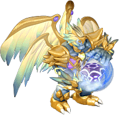

提供情報或編輯請求，請到情報提供公佈欄、編輯公佈欄。
關於天上界｜善惡稱號任務｜善屬性任務｜惡屬性任務
關於天上界
- 天上界(科斯摩弗利亞)的規格與地上(麥索西亞)不同。
- 關於天上界的詳細內容，請參閱科斯摩弗利亞廣場。
善惡稱號任務
- 歷史
- 開始條件 Blv11～
- 內容 與NPC對話，被委託累積符合地位的信仰力。
- 善屬性：光之聖地 NPC賽科雷克斯
- 惡屬性：黎明之隙 NPC諾克斯梅吉斯特
- 信仰力1=信仰經驗值100 ※死亡的話計數會在那裡重置
- 獎勵品--善惡稱號、善惡經驗值(詳細請參閱善惡稱號)
- 最大BP會稍微上升。(但是TLv、BLv提升後，上升的數值就會消失)
善屬性任務
諾門的善1次封印解除
- 履歷 諾門的善1次封印解除
- 開始條件 Tlv1～
- 內容 在光之聖地與NPC諾門對話，被委託帶來20個斯坎達倫結晶。
- 獎勵品 動力神聖寶珠
諾門的善1次升級
- 履歷 諾門的善1次升級
- 開始條件 完成任務「諾門的善1次封印解除」
- 內容 在光之聖地與NPC諾門對話，被委託帶來20個斯坎達倫結晶。
- 獎勵品 躍動之石
卡斯蒂亞的善2次封印解除
- 履歷 卡斯蒂亞的善2次封印解除
- 開始條件 Tlv1～
- 內容 在光之聖地與NPC卡斯蒂亞對話，被委託帶來20個歐佩爾結晶。
- 獎勵品 動能神聖寶珠
卡斯蒂亞的善2次升級
- 履歷 卡斯蒂亞的善2次升級
- 開始條件 完成任務「卡斯蒂亞的善2次封印解除」
- 內容 在光之聖地與NPC卡斯蒂亞對話，被委託帶來20個歐佩爾結晶。
- 獎勵品 動能之石
梅烏斯的善3次封印解除
- 履歷 梅烏斯的善3次封印解除
- 開始條件 Tlv1～
- 內容 在光之聖地與NPC梅烏斯對話，被委託帶來20個格亨納結晶。
- 獎勵品 瞬間神聖寶珠
梅烏斯的善3次升級
- 履歷 梅烏斯的善3次升級
- 開始條件 完成任務「梅烏斯的善3次封印解除」
- 內容 在光之聖地與NPC梅烏斯對話，被委託帶來20個格亨納結晶。
- 獎勵品 瞬間之石
麻煩的存在
- 履歷 希姆梅爾的「麻煩的存在」完成
- 開始條件 Tlv51～
- 內容
- 在光之聖地與NPC希姆梅爾(53,21)對話，打倒20隻格亨納陸橋的毀滅鳳凰後向NPC希姆梅爾回報。
- 注意：格亨納陸橋以外的毀滅鳳凰不會計入討伐數。
- 獎勵品
- 善惡經驗值3,000
- 信仰經驗值3,000
- 涅夫之鎧石・礦石各5個
泥巴的功效
- 履歷 希姆梅爾的「泥巴的效能」完成
- 開始條件 完成任務「麻煩的存在」
- 內容 在光之聖地與NPC希姆梅爾對話，收集10個「泥塊」後向NPC希姆梅爾回報。
- 獎勵品
- 善惡經驗值5,000
- 信仰經驗值5,000
- 露米娜力量寶珠1個
雙頭的秘密
- 履歷 希姆梅爾的「雙頭的秘密」完成
- 開始條件 完成任務「泥巴的效能」
- 內容 在光之聖地與NPC希姆梅爾對話，取得1個「模式記錄書」後向NPC希姆梅爾回報。
- 獎勵品
- 善惡經驗值8,000
- 信仰經驗值8,000
- 露米娜原型寶珠1個
驅動骷髏的動力
- 履歷 希姆梅爾的「骷髏的動力」完成
- 開始條件 完成任務「雙頭的秘密」-內容 在光之聖地與NPC希姆梅爾對話，取得1個「骷髏靈魂之石」後向NPC希姆梅爾回報。
- 獎勵品
- 善惡經驗值10,000
- 信仰經驗值10,000
- 露米娜戒指1個
取得格亨納監獄記錄日誌
- 履歷 希姆梅爾的「取得格亨納監獄記錄日誌」完成
- 開始條件 完成任務「骷髏的動力」
- 內容 在光之聖地與NPC希姆梅爾對話，取得1個格亨納監獄記錄日誌後向NPC希姆梅爾回報。
- 獎勵品
- 善惡經驗值15,000
- 信仰經驗值15,000
- 露米娜耳環1個
尋找雷烏斯
- 履歷 重要情報完成
- 開始條件 Tlv51～
- 內容
- 與光之聖地的NPC雷儂科恩(37,24)對話。
- 接任務的人當隊長組成隊伍。
- 操作格亨納5樓監獄的拉桿前往魔王區，與NPC雷烏斯對話。
※拉桿操作的詳情：格亨納5樓監獄有5處可以操作的拉桿。
將這些全部「各一次」變成「拉下的狀態」就能移動。
如果已經是拉下的狀態，要先拉上再拉下。同一個拉桿拉下2次的話任務就無法進行。
那種情況下，換別人當隊長重新進行一次任務即可重置。 - 地圖內會出現6隻鋼鐵狂戰士、6隻泥人、5隻毀滅鳳凰、緹亞潔。
※過一段時間會消失，所以不快點打倒就無法完成任務。
如果因時間經過而有1隻消失，之後向雷烏斯回報時會被告知還有怪物，
只剩下逃跑一途。 - 討伐後，與NPC雷烏斯對話。
- 向NPC雷儂科恩回報--如果沒與雷烏斯對話就回去向NPC雷儂科恩回報，任務會失敗，必須重新來過。
- 獎勵品 露米娜墜飾 注意：丟掉的話任務就無法進行。
 露米娜墜飾
露米娜墜飾
- 備註 進入緹亞潔所在地圖，隊長需要Tlv51以上，但PT成員Tlv41以上即可進入。
（當然無法接任務。可以為了掉落等目的去打倒。）
怪物出現的位置是固定的，記住比較好。
找太久的話，緹亞潔以外的怪物會消失而無法通關。
救出作戰
- 履歷 救出海倫娜與同伴們完成
- 開始條件
- Tlv51～
- 完成任務「取得格亨納監獄記錄日誌」
- 完成任務「尋找雷烏斯」
- 內容
- 與光之聖地的希姆梅爾對話，移動到專用地圖
- ●＝希姆梅爾 ●＝海倫娜 ●＝拉茲梅（緹亞潔、法巴迪出現地點）
- 地圖上有男幽靈和女幽靈，若相鄰點擊會中怨恨的詛咒，所有能力值減少8。（包含移動速度）
| 男幽靈 | 女幽靈 |
- 從骷髏看守身上掉落特別監獄鑰匙。
- 打開關著海倫娜的牢房鑰匙，點擊海倫娜後，她會拜託你救出拉茲梅
海倫娜
- 打開關著拉茲梅的牢房鑰匙，點擊拉茲梅，NPC對話後會出現緹亞潔與法巴迪，將其打倒。
拉茲梅
 緹亞潔 緹亞潔 | 法巴迪 |
- 與同行的希姆梅爾對話，釋放剩下的囚犯。
- 打開關著男囚犯與女囚犯的牢房鑰匙。
| 男囚犯 | 女囚犯 |
- 點擊男囚犯與女囚犯後會變成主動NPC(一段時間後會消失)，和救出13人的召喚獸一樣，會攻擊攻擊玩家的怪物，按F5會移動到與玩家相同的座標
 被救出的同伴（男） 被救出的同伴（男） | 被救出的同伴（女） |
| 能力 | 與希姆梅爾對話後會被傳送到光之聖地，再次與希姆梅爾對話。 獎勵品 將露米娜墜飾升級，取得精巧的露米娜墜飾 精巧的露米娜墜飾 |
| 備註 | 備註 法巴迪在HP低於50%時會使用瞬間移動。若把它逼到牆邊會鑽進牆壁無法打倒，所以邊引誘到地圖中央附近邊打比較好。拉茲梅會救援失敗，但救出其他同伴就能通關。似乎還有後續劇情。時間限制為50分鐘，超時會被傳送回故鄉。緹亞潔會使用混亂魔法（混沌，會傳染），所以混亂防禦裝備是必備。 |
- 特別監獄鑰匙會留在道具欄，事先取得會比較順利。有一定火力的話，事前準備好收集9把鑰匙並帶幾瓶氣力回復藥水，1個人也能通關。因為有時間限制，建議2人以上。
擊潰守衛塔
- 履歷 處理守衛塔、獲得新技術
- 開始條件 Tlv51～
- 內容
- 與光之聖地的NPC克蘭澤爾（19.28）對話。
- 在格亨納3樓監獄、格亨納4樓監獄、格亨納5樓監獄各打倒1座守衛塔。
- 向克蘭澤爾回報。
- 獎勵品 各職業善惡51魔法
- 備註 毒、燃燒有效，恢復相當快，所以有緩速比較好。
它本身除了通常的塔緩速以外不會反擊，但混亂後打它會反擊，請注意。
| 職業 | 褒章技能/魔法 |
| 戰士 |  神聖三重斬、神聖三重重擊 神聖三重斬、神聖三重重擊 |
| 修道士 | 神聖氣勁 |
| 盜賊 | 神聖毒刺 |
| 聖職者 | 聖涅槃 |
| 魔術師 | 神聖墜擊 |
| 預言者 | 神聖四重飛刺、神聖大地爆裂 |
| 騎士 | 神聖連刺槍 |
| 吟遊詩人 | 神聖靈魂解除者 |
| 阿修羅 | 神聖鳳凰鐮斬 |
惡屬性任務
奧特姆的惡1次封印解除
- 履歷 奧特姆的惡1次封印解除
- 開始條件 Tlv1～
- 內容 在黎明之隙與NPC奧特姆對話，被委託帶來20個帕爾塞斯結晶。
- 獎勵品 謎團神聖寶珠
奧特姆的惡1次升級
- 履歷 奧特姆的惡1次升級
- 開始條件 完成任務「奧特姆的惡1次封印解除」
- 內容 在黎明之隙與NPC奧特姆對話，被委託帶來20個帕爾塞斯結晶。
- 獎勵品 謎團之石
馬爾魯斯的惡2次封印解除
- 履歷 馬爾魯斯的惡2次封印解除
- 開始條件 Tlv1～
- 內容 在黎明之隙與NPC馬爾魯斯對話，被委託帶來20個克修倫結晶。
- 獎勵品 混沌神聖寶珠
馬爾魯斯的惡2次升級
- 履歷 馬爾魯斯的惡2次升級
- 開始條件 完成任務「馬爾魯斯的惡2次封印解除」
- 內容 在黎明之隙與NPC馬爾魯斯對話，被委託帶來20個克修倫結晶。
- 獎勵品 混沌之石
洛裘歐的惡3次封印解除
- 履歷 洛裘歐的惡3次封印解除
- 開始條件 Tlv1～
- 內容 在黎明之隙與NPC洛裘歐對話，被委託帶來20個露米娜結晶。
- 獎勵品 騷亂神聖寶珠
洛裘歐的惡3次升級
- 履歷 洛裘歐的惡3次升級
- 開始條件 完成任務「洛裘歐的惡3次封印解除」
- 內容 在黎明之隙與NPC洛裘歐對話，被委託帶來20個露米娜結晶。
- 獎勵品 騷亂之石
麻煩的存在
- 履歷 莫爾克的[麻煩的存在]完成
- 開始條件 Tlv51～
- 內容 打倒20隻德律阿德
※只計算諾拉克號上的德律阿德
在諾拉克號上死亡掉了裝備的話，若回到城鎮就無法撿回，請注意。 - 獎勵品
- 善惡經驗值3000
- 信仰經驗值3000
- 涅夫之鎧石・礦石各5個
美味的去殼肉
- 履歷 莫爾克的[美味的生肉]完成
- 開始條件 完成任務「麻煩的存在」
- 內容 收集10個爬行貝的肉並向NPC莫爾克回報
- 獎勵品
- 善惡經驗值5000
- 信仰經驗值5000
 格亨納福斯寶珠
格亨納福斯寶珠
 卡皮歐的腳
卡皮歐的腳
- 履歷 莫爾克的[卡皮歐的腳]完成
- 開始條件 完成任務「美味的生肉」
- 內容 取得1個卡皮歐的腳並向NPC莫爾克回報
- 獎勵品
- 善惡經驗值8000
- 信仰經驗值8000
- 格亨納普羅特寶珠
烏修萊因的燈
- 履歷 莫爾克的[烏修萊因的燈]完成
※敵人的名字是烏爾修萊因，但在履歷上寫的是烏修萊因 - 開始條件 完成任務「卡皮歐的腳」
- 內容 取得1個烏爾修萊因燈並向NPC莫爾克回報
- 獎勵品
- 善惡經驗值10000
- 信仰經驗值10000
- 格亨納戒指
- 備註 烏爾修萊因在瀕死時會使用艾克斯塔，因此
強烈建議帶有吟遊詩人的PT前往。
取得聖經
- 履歷 莫爾克的[取得聖經]完成
- 開始條件 完成任務「烏修萊因的燈」
- 內容 取得1個露米娜聖經並向NPC莫爾克回報
- 獎勵品
- 善惡經驗值15,000
- 信仰經驗值15,000
- 格亨納耳環1個
- 備註 比前面「烏修萊因的燈」任務更容易取得(加入懺悔2・3的PT就
相當容易掉落)，所以如果在「烏修萊因的燈」結束前就拿到露米娜聖經，
建議先保管起來。
盧米納姆金吉的憤怒
- 履歷 取得露米娜神殿入口鑰匙
- 開始條件 善惡lv51↑時與黎明之隙的海因克爾對話
- 內容 收下信件，與露米娜神殿入口的守門人對話。
之後打倒被傳送到的場地上的2隻守門人，取得鑰匙。
把那把鑰匙拿給海因克爾。 - 獎勵品
- 海因克爾→露米娜神殿之鑰(進入露米娜神殿時會受到一定的傷害，持有的話就不會)
- 宮科德→各職業善惡51魔法（但聖職者沒有）
2011.7.20以前已取得鑰匙的話，只要回報即可。
- 備註 被傳送到的場地上除了守門人以外沒有其他怪物，所以不需要大規模的PT，有前衛2人就能打倒(對火力有自信的前衛單人也可)。
※沒組PT的話任務好像不會進行？
尋找阿瑟拉的痕跡
- 履歷 肖像畫的秘密完成
- 開始條件 善惡lv51↑時與黎明之間的赫爾克里布對話。
※能進入地圖的只有善惡Lv51↑且在露米娜神殿1樓的成員
不符合條件的成員會被留在目前所在的地圖 - 內容 PT調查露米娜神殿1樓9點鐘方向的畫，
打倒被傳送到的地圖6點鐘方向的阿瑟拉，打倒後與出現的長得很像阿瑟拉的NPC對話，就會被傳送到別的地圖
(※調查畫的角色限於PT隊長且任務未完成者 隊長調查的話
PT成員全員都會被傳送到阿瑟拉所在的地圖)
前往阿瑟拉所在的地圖之前，如果有PT成員在露米娜神殿1樓以外的地方，該成員
不會被傳送，請注意
傳送到別的地圖後，若沒結束任務就傳送走，NPC就不會出現，請注意
討伐阿瑟拉至少需要前衛2人，最好3～4人，不建議用魔法師PT前往
- 獎勵品 格亨納墜飾 丟掉的話任務就無法進行，請注意。
 格亨納墜飾
格亨納墜飾
尋找秘密房間
- 履歷 奪取了機密文件
- 開始條件
- Tlv51～
- 任務 取得聖經完成
- 任務 肖像畫的秘密完成
- 2012/05/10目前，因為bug，沒有肖像畫的秘密完成履歷似乎也能進行？
- 內容
- 與莫爾克對話，移動到專用地圖
- 房間左右各有4個可疑的象徵物，點擊並破壞共8個。
- 誰都可以破壞，但要出現魔王，必須由隊長破壞
可疑的象徵物
- 點擊MAP上方的祭壇，利用隱藏的門移動到別的地圖 接續「機密文件的奪取」
- 獎勵品 無
- 備註：破壞可疑的象徵物會出現怪物，但不需要打倒。破壞時會中怨恨的詛咒，所有能力值減少8。（包含移動速度）
機密文件的奪取
- 履歷 奪取了機密文件
- 開始條件
- Tlv51～
- 與任務「尋找秘密房間」連動
- 內容
- 與尋找秘密房間任務連動。
- 點擊MAP上方的祭壇後NPC會出現，同時阿瑟拉與露米涅爾也會出現。
 阿瑟拉 阿瑟拉 |  露米涅爾 |
- 打倒阿瑟拉與露米涅爾後會開啟視窗，NPC說話後取得阿瑟拉之鑰與露米涅爾之鑰。點擊MAP上方的祭壇就能取得露米娜的機密文件，並被傳送到黎明之間的莫爾克前。
- 與莫爾克對話即達成任務。
- 獎勵品：信仰經驗值50000 將格亨納墜飾升級，取得精巧的格亨納墜飾精巧的格亨納墜飾
備註 使用隱藏的門移動到房間時，最好先打倒MAP上的怪物再點擊祭壇。阿瑟拉會使用名為瘋狂的混亂魔法（混沌，會傳染），所以混亂防禦裝備是必備。露米涅爾在HP低於50%時會使用瞬間移動。若把它逼到牆邊會鑽進牆壁無法打倒，所以邊引誘到MAP中央附近邊打比較好。
2013/05/31目前，因為bug，即使沒有持有格亨納墜飾也能取得精巧的格亨納墜飾。不清楚把精巧的格亨納墜飾與格亨納墜飾的取得順序顛倒後，能否兩者都持有。
- 進入地圖後雖無顯示，但有1小時的時間限制。時間到會被送回各城鎮。
阿瑟拉・露米涅爾的HP都非常多，所以單人進行時常會超時。
不過只要打倒其中一隻，下次重來時會保留已打倒的資訊，
所以(雖然劇情上讓人難以接受)只要打倒沒打倒的另一隻，視窗就會開啟並取得2把鑰匙→通關。
惡3次任務（暫定）
- 履歷 從宮科德學習新技術
- 開始條件
- Tlv51～
- 任務「取得聖經」完成
- 任務「傳達阿瑟拉的信」完成
- 內容
- 獎勵品 3次技能/魔法
- 備註 接任務時，也可以組隊進行。
只有隊長可以接任務。
隊伍成員5人以下可進行。